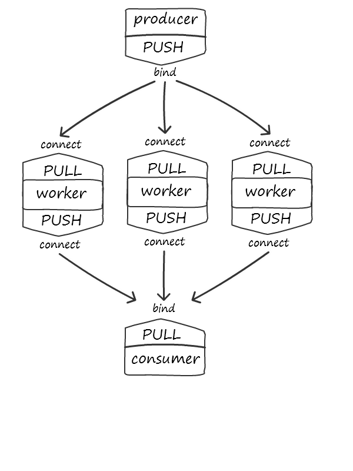

ZeroMQ
toolkit for high-performance distributed applications
zdeslav vojković
@zdeslav_v
zdeslav@plural.hr / www.plural.hr
Distributed applications

Distributed applications

What is ZeroMQ?
- not an MQ!
- networking and concurrency library
- asynchronous messaging
- routing/topology aware
- brokerless
- high performance
- multiple transports
- cross-platform
- numerous bindings (client libs)
- LGPL licensed
Design and implementation
No broker
Conventional Sockets (TCP/UDP)
ZeroMQ Sockets
Messages
- Asynchronous
- Atomic
- Multipart
Performance
- Low latency, high throughput
- Zero-copy, reference counted
- Batching
- Configurable through socket options
RabbitMQ: 4500 msg/s -> ZeroMQ: 250,000 msg/s
apples to oranges (but similar use case with transient messages)
ZeroMQ API
- Objects: context, socket, message
- Flow: create context > bind/connect > send/receive
# server process
context = zmq.Context(1)
socket = context.socket(zmq.PUB)
socket.bind("tcp://*:5556")
socket.send("some event")# client process
context = zmq.Context()
socket = context.socket(zmq.SUB)
socket.connect("tcp://server:5556")
event_data = socket.recv()Not in the box
- Serialization
- Compression
- Security
- ...
Transports
Transports
# server process
context = zmq.Context(1)
socket = context.socket(zmq.PUB)
# socket.bind("tcp://*:5556")
socket.bind("ipc:///tmp/feeds/0")
socket.send("some event")
# client process
context = zmq.Context()
socket = context.socket(zmq.SUB)
# socket.connect("tcp://localhost:5556")
socket.connect("ipc:///tmp/feeds/0")
event_data = socket.recv()Communication patterns
Pattern: publish-subscribe
Pattern: publish-subscribe
Sockets: PUB/SUB

SUB can subscribe to specific topic or all messages
Pattern: publish-subscribe
Sockets: PUB/SUB, XPUB/XSUB
Pattern: client-server
Pattern: client-server
Sockets: REQ/REP
context = zmq.Context(1)
socket = context.socket(zmq.REQ)
socket.connect("tcp://localhost:5556")
socket.send("some event")
reply = socket.recv() # blocksPattern: client-server
Sockets: REQ/REP, ROUTER/DEALER
Pattern: pipeline
Pattern: pipeline
Sockets: PUSH/PULL
Pattern: thread signaling
Pattern: thread signaling
Socket: PAIR
- 1 to 1: similar to conventional sockets
- very low latency with inproc transport
- bind before connect, no automatic reconnect
topologies and designs
distributed logging: PUB-SUB

Mongrel2: web server
Chat server: opposite of mongrel
Consumer controlled pipeline
Thank you!
http://zguide.zeromq.org